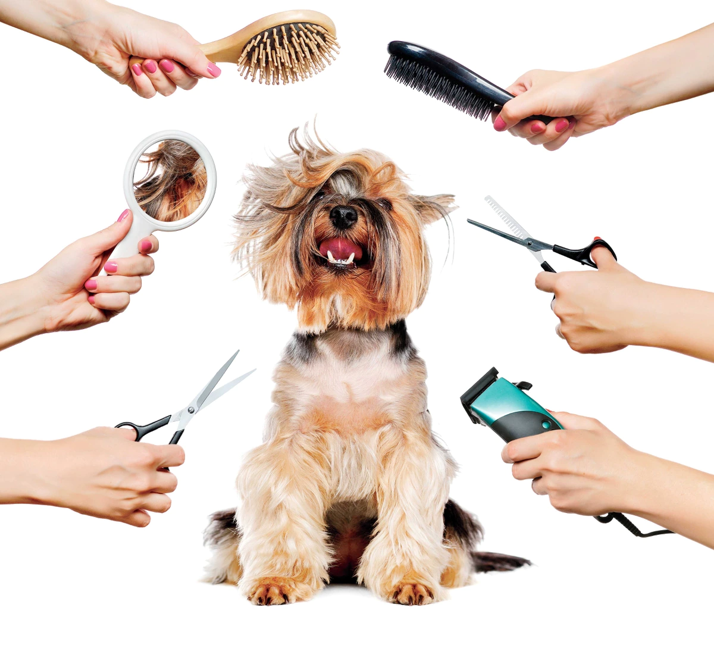
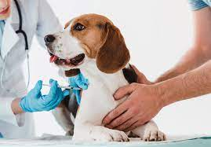
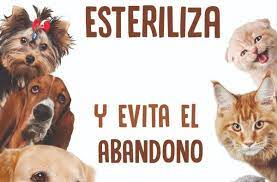

Urgencias
Las disponibilidad de médicos veterinarios en nuestras instalaciones es de las 24 horas, 7 días de la semana, los 365 días del año. Entendemos que para un paciente critico lo más importante es la atención durante las 2 primeras horas posteriores al inicio de cualquier proceso para lograr un mejor pronostico en tu mascota.
Peluqueria

Nuestro principal proposito es que el servicio de baño y peluquería contribuya a mejorar la salud de las mascotas, es por ello que nos interesa que la experiencia de cada mascota en nuestra área de belleza sea lo más positiva posible.
Vacunacion

Servicio de vacunación para tu mascota. Ofrecemos una vacuna genuina, proveniente de laboratorios de trayectoria que garantiza condiciones como la cadena de frio.
esterilzacion

Tenemos recursos para entender las implicaciones de esterilizar a tu mascota. Entre ellos un cuestionario de 5 preguntas para validar tus conocimientos, una charla interesante y los beneficios de esterilizar tu mascota en Vetpoly. Llena este formulario si deseas que te contacte un representante de servicio.